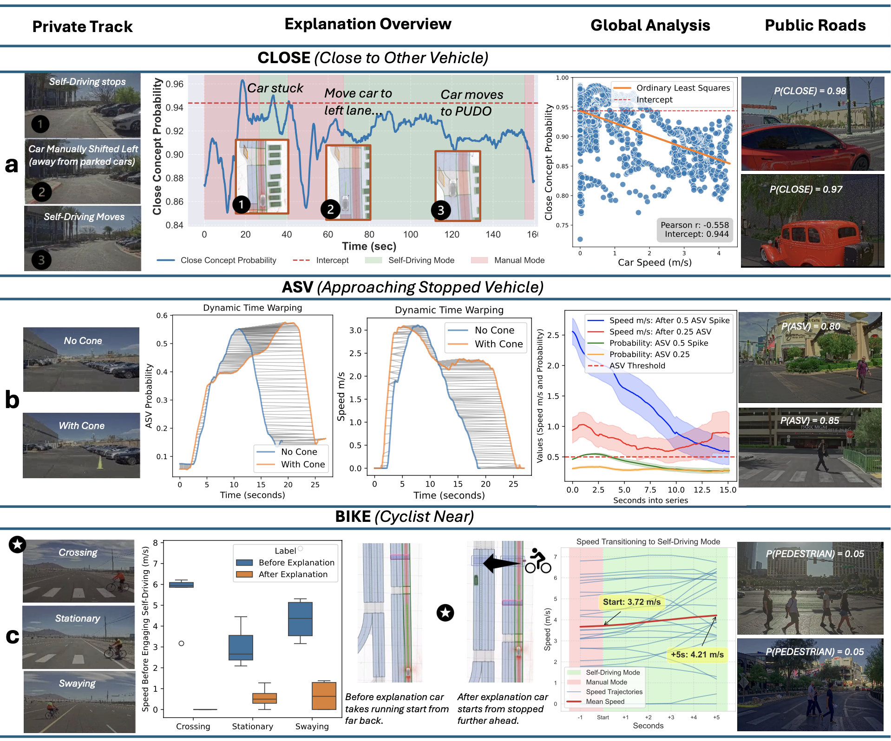
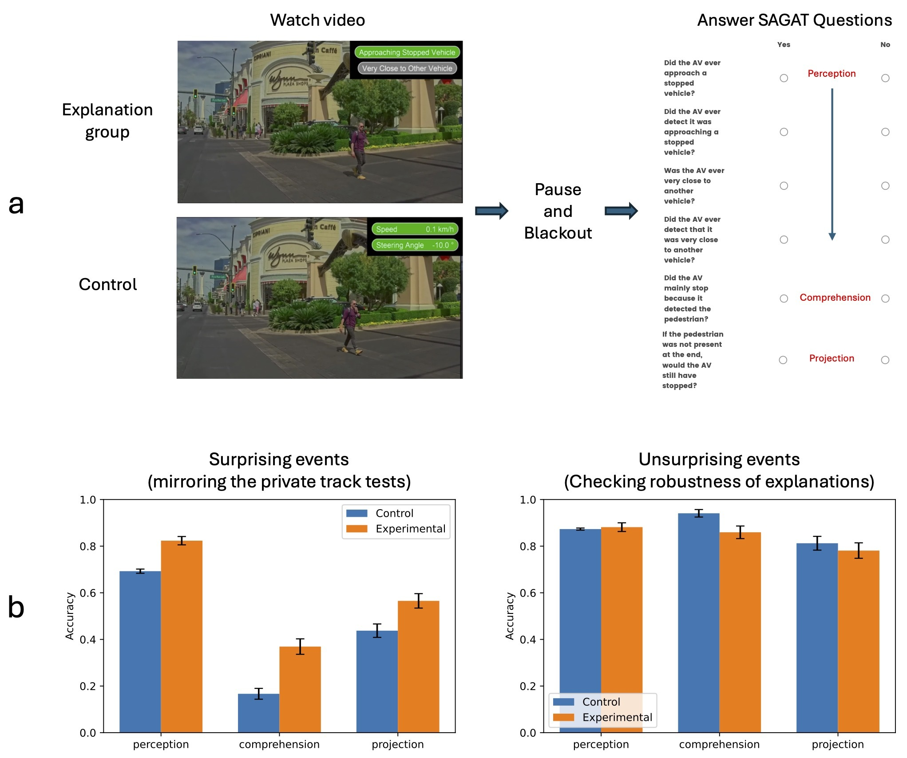
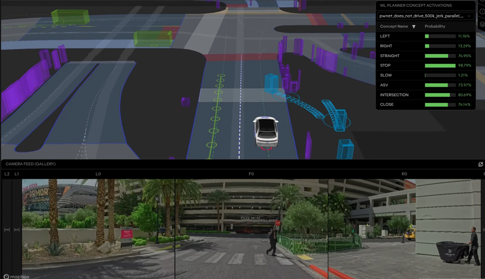
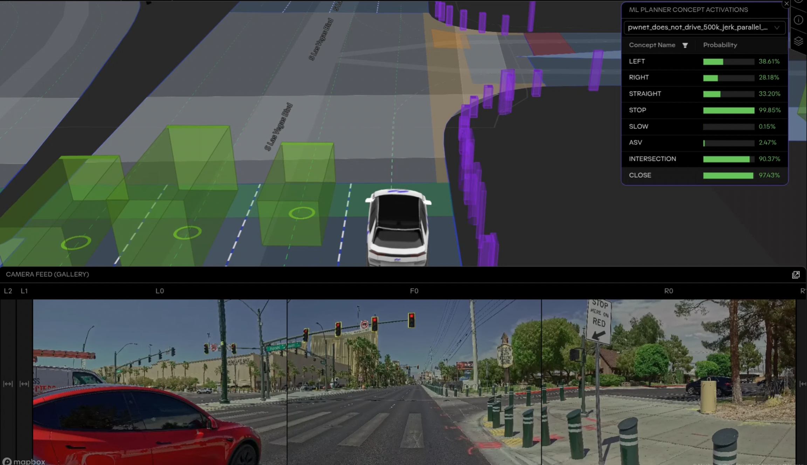
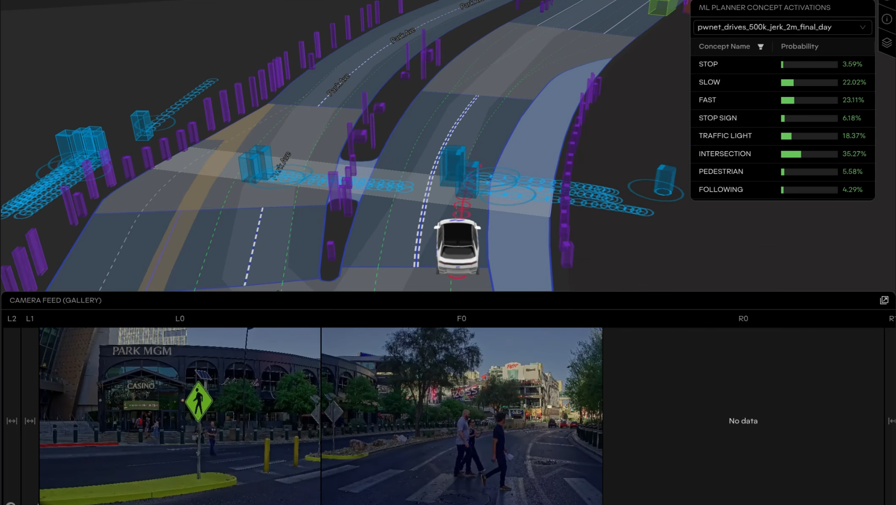

Explainable deep learning improves human mental models of self-driving cars
Self-driving technology is already here. Fully autonomous vehicles are navigating public roads in major cities, while increasingly capable driver-assistance systems are becoming part of everyday consumer vehicles. As these technologies advance, people are being asked to place more trust in automated systems that make complex driving decisions in real time.
But even the most capable autonomous systems can behave in unexpected ways. This is especially challenging for systems powered by deep learning: while neural networks can learn remarkably sophisticated driving behavior, understanding why they make a particular decision can be difficult. For a safety-critical technology like autonomous driving, that matters: drivers, safety operators, and engineers need to understand the system's limitations and anticipate when it may fail.
In our latest research, published in Nature, we introduce the Concept-Wrapper Network (CW-Net), a new approach for making such black-box deep learning systems more interpretable. CW-Net grounds a vehicle's decisions in human-understandable concepts – such as whether it is approaching a stopped vehicle or driving close to another road user – while preserving the driving performance of the original system.
We deployed CW-Net on real self-driving cars and found that its explanations help people build more accurate mental models of the vehicle, allowing them to better predict its behavior when it mattered most.
How CW-Net works

Our starting point is a deep-learning-based planner trained to imitate human driving. Given a driving scene, the planner generates a set of possible trajectories and uses a neural network to score each based on how closely it resembles human driving. The vehicle then selects the highest-scoring trajectory.
CW-Net makes this process interpretable by introducing a concept layer before the final scoring layer. This layer translates the network's internal representation into human-understandable concepts, such as "Approaching stopped vehicle," "Close to another vehicle," or "Close to cyclist." The planner then scores trajectories using only these concepts.
This means the concepts do not merely describe decisions after the fact: they directly determine the vehicle's behavior. In that sense, the activated concepts are causally faithful to the vehicle's decision making. CW-Net learns to recognize these concepts while reproducing the decisions of the original planner, with less than 1% difference across metrics on a large-scale autonomous driving benchmark.
Using CW-Net to understand surprising real-world situations
To test whether CW-Net's explanations are useful in practice, we deployed it on a real self-driving vehicle in a semi-naturalistic study. Rather than scripting specific failures, we observed surprising situations that arose naturally during testing and examined whether CW-Net could help the safety driver understand what the vehicle was doing and predict how it would behave next.

Three situations stood out. In each, the driver's initial understanding turned out to be incomplete or incorrect. CW-Net's explanations revealed what was actually influencing the vehicle's behavior, allowing the driver to form a better mental model of the system.
Getting stuck next to parked vehicles
The vehicle repeatedly stopped near a pickup/drop-off zone. The driver initially believed the zone itself was causing the behavior, but CW-Net showed strong activation for the "Close to another vehicle" concept. After seeing the explanation, the driver tested this hypothesis by manually moving the vehicle farther away from the parked cars – and the vehicle began moving again.
Hallucinating a stopped vehicle
In another location, the vehicle repeatedly stopped next to a traffic cone. The driver initially blamed the cone, but CW-Net activated the "Approaching stopped vehicle" concept, suggesting that the planner was behaving as though a stopped vehicle were ahead. Removing the cone did not change the behavior: the vehicle stopped in the same place, supporting the explanation that it was hallucinating a stopped vehicle at that location.
Reacting safely to a cyclist
Finally, the vehicle reliably stopped when approaching a cyclist, but CW-Net's "Close to cyclist" concept remained near zero. This revealed that, despite the apparently safe behavior, the planner itself was not responding to the cyclist. After seeing the explanation, the driver became more cautious; subsequent analysis confirmed that a separate safety system, rather than the planner, had been preventing the collision.
Figure 3 summarizes these three real-world scenarios and the evidence that the CW-Net explanations reflected meaningful aspects of the planner's behavior. Across repeated tests, the relevant concepts were associated with changes in the vehicle's behavior. Analogous situations also emerged during operation on public roads.

Evaluating CW-Net explanations at scale
To test whether these findings generalize beyond individual safety drivers, we conducted larger online studies using video replays of the same real-world scenarios. We tested both self-driving experts and non-experts, asking whether CW-Net's explanations could improve their understanding of the vehicle and their ability to predict what it would do next.
Participants first watched each scenario without CW-Net's explanation and answered questions about why the vehicle behaved as it did and what it would do in a counterfactual situation. They then saw the explanation and answered the same questions again.

CW-Net's explanations shifted participants toward more accurate mental models of the vehicle and improved their predictions of its future behavior. These improvements were seen in both self-driving experts and non-experts, suggesting that the explanations are useful regardless of prior expertise.
Improving situational awareness on public roads
Finally, we tested whether these benefits extend to more complex, naturalistic driving. We ran CW-Net during several hours of public-road operation in Las Vegas and used the resulting scenarios in a larger online study of situational awareness.
We used the Situation Awareness Global Assessment Technique (SAGAT), a standard framework that measures whether people can perceive what is happening, comprehend why it is happening, and predict what will happen next. Participants watched videos either with CW-Net explanations or with basic vehicle information. At a key moment, the video was paused and participants were asked questions about the situation.

CW-Net significantly improved all three measures of situational awareness during surprising events, when understanding the vehicle was most important. For unsurprising events, the explanations produced no significant differences. Together with our earlier studies, these results show that CW-Net can help people build better mental models of a self-driving system and use those models to better understand and anticipate its behavior.
Approaching Stopped Vehicle (ASV)

Proximity to Other Vehicles (CLOSE)

Cyclist Detection (BIKE)

Limitations and next steps
Our study is a proof of concept, and several challenges remain before an approach like CW-Net could be used in production. We evaluated it on a relatively small set of real-world scenarios, partly because surprising events are, by definition, difficult to find in a capable self-driving system. Our experimental planner also has limitations, which gave us opportunities to study unexpected behavior in the real world. Future work will need to evaluate CW-Net across many more situations and with more capable, potentially production-grade planners.
Our experiments also focused on a single type of machine-learning-based planner. However, the core idea behind CW-Net is not specific to this architecture: grounding a model's internal representations in human-interpretable concepts could similarly be applied to other approaches, including end-to-end learning systems and emerging vision-language-action models. An important next step is to test how well CW-Net generalizes across these architectures and to a much broader set of driving concepts.
There is also more work to do in how explanations are presented. CW-Net produces concept probabilities that must be normalized and thresholded before they become useful explanations, and drivers needed time to learn how to interpret them. A production system would require careful interface design to present the right concepts, at the right time, in a form that is intuitive without becoming distracting.
More broadly, improving the underlying planner creates an interesting challenge for evaluating explainability: as driving systems become better, surprising failures become rarer; yet understanding the remaining failures may become even more important. Testing CW-Net at greater scale will therefore require stronger planners, broader architectures, and new ways of finding informative real-world situations in which explanations can help people understand the capabilities and limitations of increasingly sophisticated autonomous systems.
Looking ahead
Our work shows that explainable deep learning can help people better understand and anticipate the behavior of self-driving systems in the real world. But the challenge extends far beyond autonomous vehicles: as deep learning increasingly powers safety-critical systems – from autonomous drones to robotic surgery – operators and developers will need ways to understand their capabilities, limitations, and unexpected behavior. We hope CW-Net provides a step toward autonomous systems that are not only more capable, but also more transparent, predictable, and ultimately safer to work with.
Citation
If you find this work useful in your research, please consider citing: